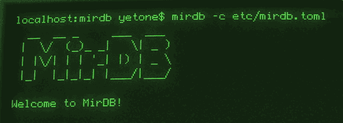

Memcached Protocol
Drop-in replacement with full protocol compatibility. Use existing Memcached clients without any code changes.

Built with Rust. Powered by LSM Trees. Memcached Compatible.
Drop-in replacement with full protocol compatibility. Use existing Memcached clients without any code changes.
Persist data to disk with SSTable files. Your data survives restarts and system failures.
Efficient write performance with automatic compaction. Optimized for write-intensive workloads.
Memory-safe, high-performance implementation. Zero-cost abstractions with compile-time safety guarantees.